ECONOMICS & TECHNOLOGY
ECONOMICS
Founder, Start-up: Khanh Phuong Bird's Nest
From a Family’s Wish to a Health-Nourishing Brand
My entrepreneurial journey began with my mother’s dream of creating a nutritional wellness brand. When I was nine, my great-grandfather passed away, leaving our family wondering whether better nutrition could have supported his health. This experience inspired my mother to seek trustworthy nutritional products, first for our family and eventually for other households.
I joined her in turning this dream into reality. We researched suppliers and evaluated bird’s nest products based on their origin, color, structure, cleanliness, purity, and integrity. We also visited laboratories to understand purification processes and product safety.
Beyond research, I designed the brand’s logo, sourced packaging suppliers, selected boxes and logo stickers, and helped establish the packaging process. Through these responsibilities, I learned that a product’s value depends not only on its presentation but also on the care behind every selection.
In 2025, we revisited our initial concept from 2020 and rebuilt the brand with a clearer identity. As my academic commitments increased, I continued contributing through commercial advertising while learning financial calculations and revenue management from my mother.
Eventually, we introduced Khanh Phuong, our family’s bird’s nest brand, to our local community in Di An City. What began as my mother’s personal aspiration became a shared entrepreneurial journey, teaching me that building a business means more than selling products: it requires earning customers’ trust through careful decisions, continuous learning, and a genuine commitment to their well-being.
Founder, Khanh Phuong Bird's Nest | May 2025 - Present
- Khanh Hoa-based bird’s nest startup developing health and wellness products from locally sourced ingredients
- Surveyed 100+ consumers on needs, price, and buying habits to choose target customers and position products
- Conducted market research and developed the supply chain by sourcing bird’s nest products from suppliers in Khanh Hoa
- Built the brand and online sales channel through Facebook Fanpage, managing customer consultation and care primarily for customers in Central and Southern Vietnam, generating approximately VND 120 million in revenue
- Expanded offline sales through 5+ fairs and community events in Ho Chi Minh City, generating approximately VND 40 million in revenue
- Committed VND 33 million to support 30+ children with ADHD in Vinh Long through nutrition and educational programs
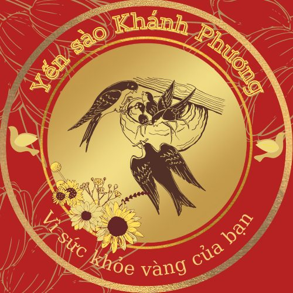
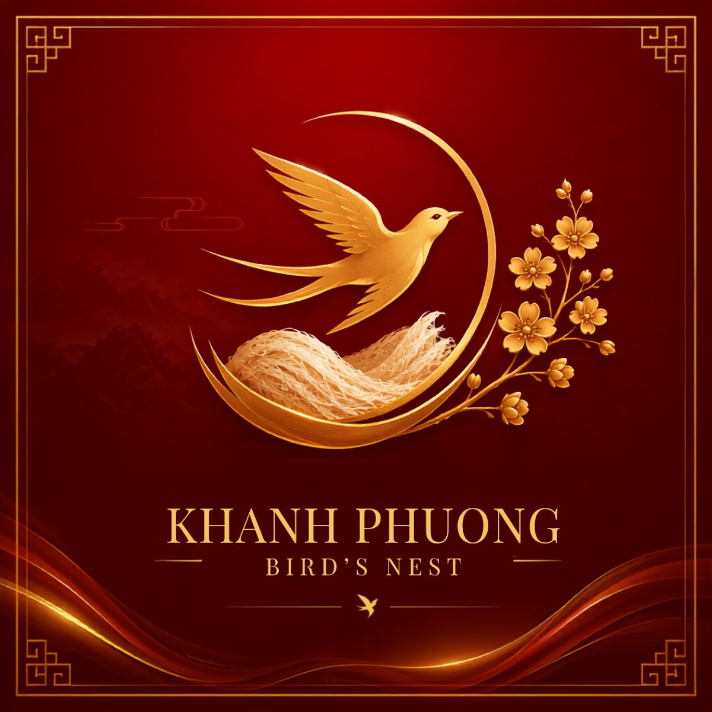
Head of Finance Department, Youngpreneurs Ecosystem Vietnam
A Journey Beyond Numbers
Ever since I was young, I have been fascinated by business competitions and the process of turning ideas into reality. When I had the opportunity to join Youngpreneurs Ecosystem Vietnam as Head of the Finance Department, I was genuinely excited. However, organizing a competition on such a scale for the first time also made me nervous.
Through professional training and working alongside My, Anh, Hoang, and the rest of the team, I gained a new perspective on financial management. I realized that finance was not merely about tracking numbers or balancing budgets; it was about allocating resources strategically and ensuring every expense contributed to the competition’s vision.
Behind the scenes were countless late nights spent drafting sponsorship proposals, calculating costs, and reaching out to potential sponsors. Not every attempt succeeded, and facing repeated rejections was discouraging. Yet, each setback pushed us to refine our proposals, improve our communication, and approach fundraising more strategically.
This experience taught me that financial leadership requires more than analytical skills. It demands resilience, adaptability, teamwork, and the willingness to learn from failure. Working with my teammates also helped me understand how thoughtful financial decisions can turn ambitious ideas into achievable plans.
Looking back, Youngpreneurs Ecosystem Vietnam was more than an opportunity to apply my financial knowledge. It challenged me to step outside my comfort zone, grow alongside a dedicated team, and understand the effort behind bringing a large-scale initiative to life. Most importantly, it showed me that meaningful achievements come not only from careful planning, but also from the perseverance and shared commitment of the people working toward a common vision.
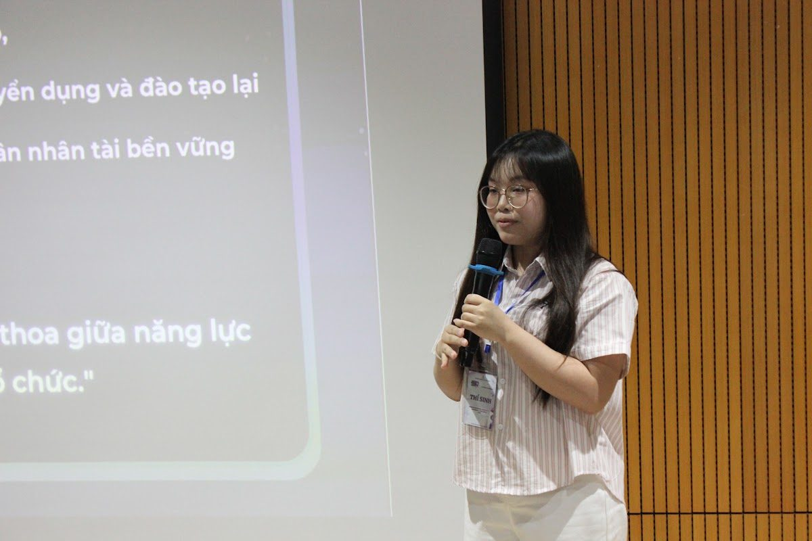
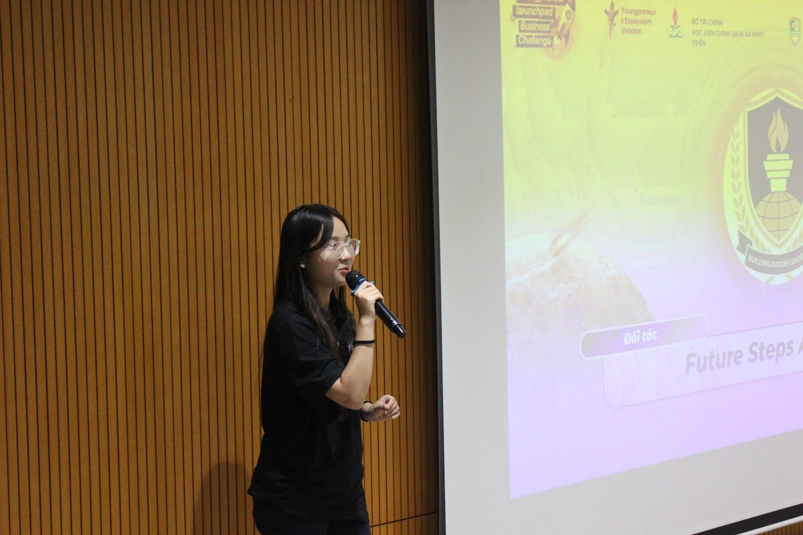
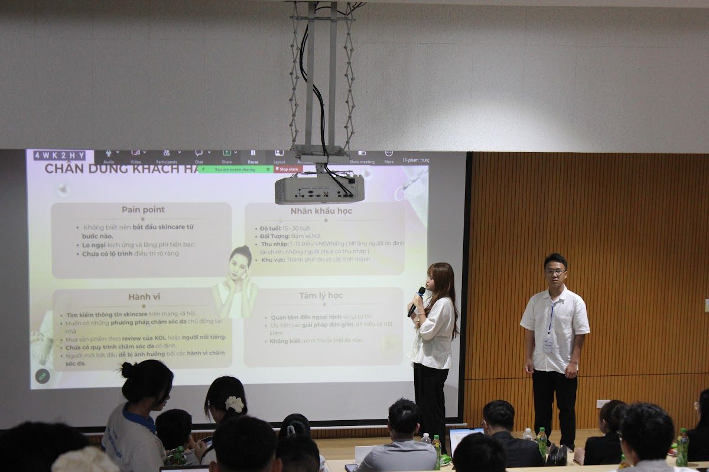
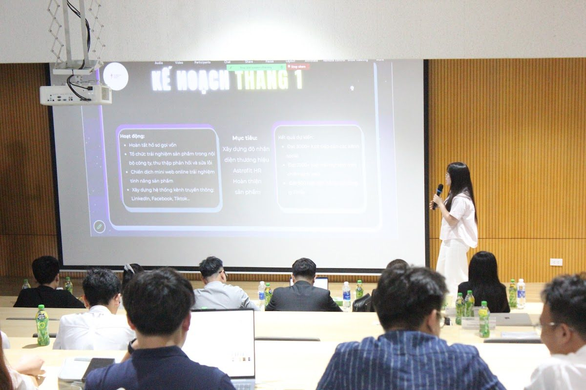
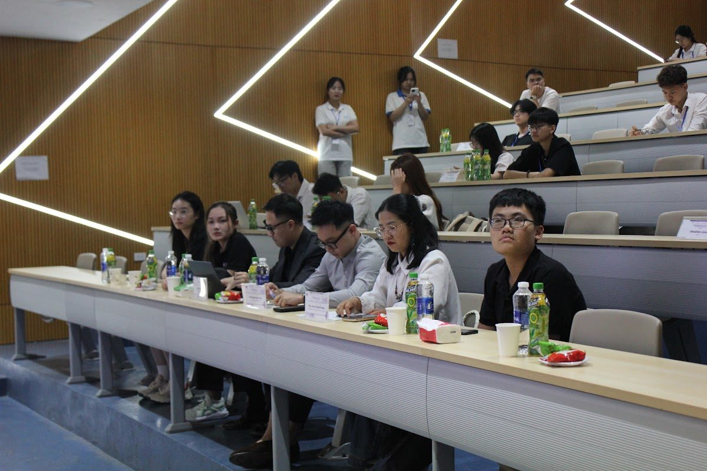
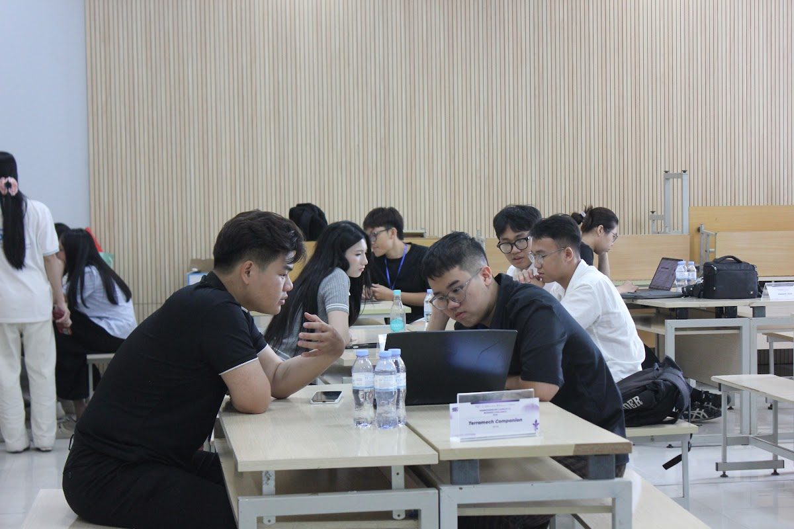
Co-Author under the guidance of Nguyen Van Quan, "Assessing the impact of technological interventions on the reduction of care costs for children with ADHD in Vietnam"
As a person with ADHD, I understood the challenges families face in managing treatment and supporting their children. This motivated me to research the financial and technological barriers to ADHD care in Vietnam. Under the guidance of Professor Nguyen Van Quan, I reviewed more than 20 domestic and international studies to identify gaps in existing support systems.
Through this research, I developed essential academic skills, including literature review, critical analysis, information synthesis, and evidence-based problem-solving. Comparing studies from different contexts taught me to question assumptions, recognize limitations in existing research, and approach complex issues from multiple perspectives. I also learned to turn research findings into practical solutions rather than treating research as an academic exercise alone.
These insights inspired me to design an application that helps parents track treatment-related expenses and connect with the ADHD caregiving community. More importantly, the experience taught me how to transform a personal challenge into a research question, investigate it systematically, and use evidence to develop solutions that address real community needs.
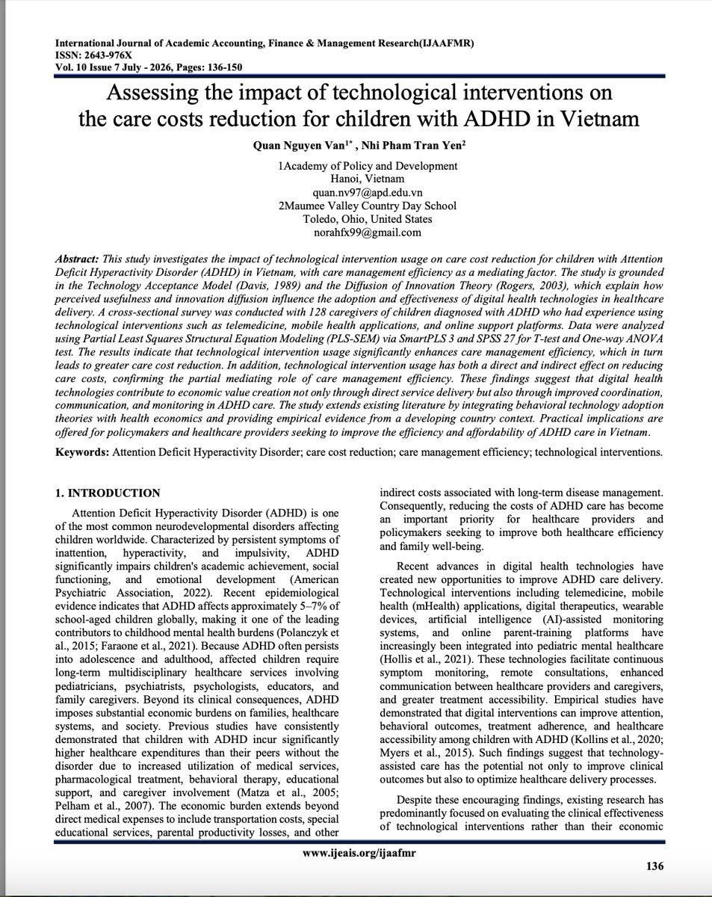
Deputy Head of Financial and External Relationship Department, The Logos
I really love the Logos environment. People are nice and have punchlines for all situations. While serving as a deputy head, I had time to know Minh Suong, the Head of Finance, a great girl with great skills in Excel and leadership. I learned a lot from how she managed and operated an event to cooperate with the teammates. We designed and calcualted events' budgets and ensured the quality of attendees' speakers in most of the event. I once sent direct and indirect cold emails to invite 3 main speakers and dealt with their fixed schedules, like Tran Giap Phuong Linh, Nguyen Huy Thien Bao, Nguyen Truc Anh, and debating coaches like Ms. Phan My Linh and Mr. Vu Anh Tuan. After our successful bootcamp, we're now starting to work on our journey to bring debate as an essential skill for Vietnamese kids. We finally landed in secondary school in Hong Van, Hanoi, and our mission is still ongoing.
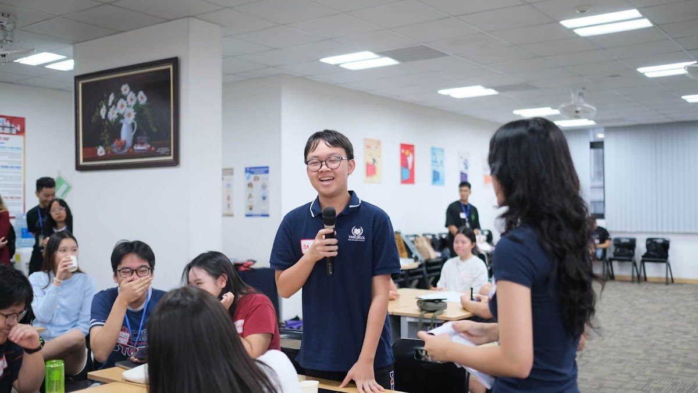
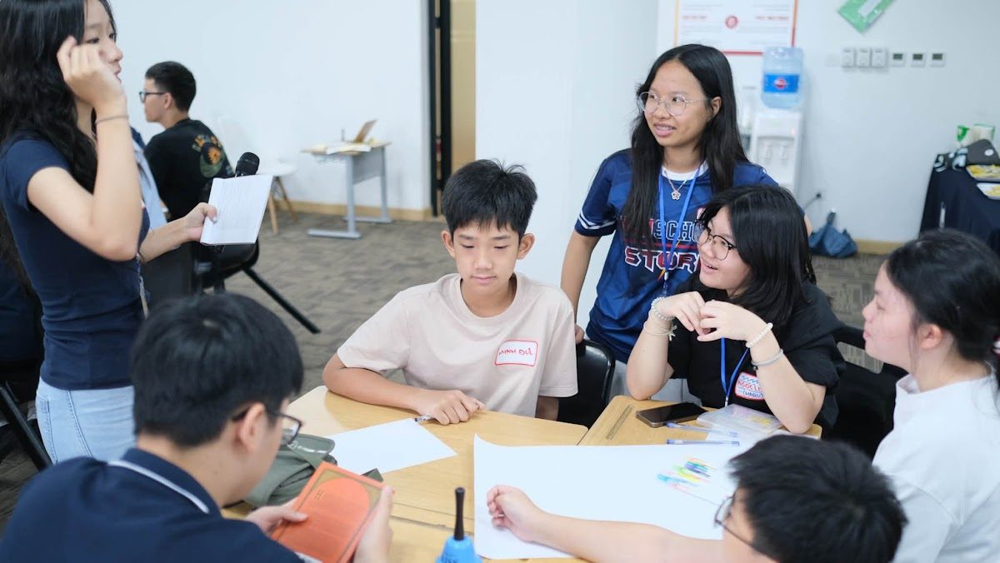
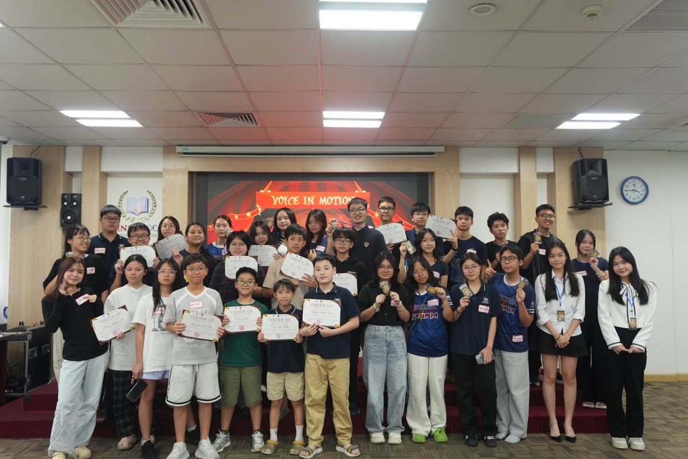
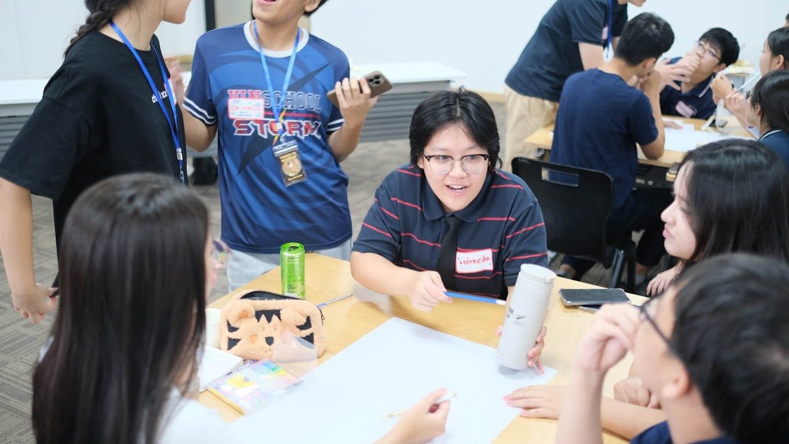
Sales Intern, SQMEX Corporation
Being a saleswoman isn't easy. I was supervised by Ms. Nguyen Thi Kieu Trinh and accompanied by Ms. Nguyen Thi Hong Phuc on my way to becoming a salesperson. We usually have to prepare a lot of strategies and learn about customers' hobbies to create topics to talk about with them before actually scheduling a dinner. As a salesperson, I had to see and test the products by myself to provide the most accurate and precise information for our customers. As an intern, I could see my own limitations in communication and the sharpness in negotiation when dealing with price and visiting suppliers. Because of the field in construction supply for film-faced plywood, we have to breathe in an unpleasant scent of factory wood, which comes from a special type of glue. After the visit, we have to make a report on certain types of plywood to keep track of customers' needs and send them messages about our products.
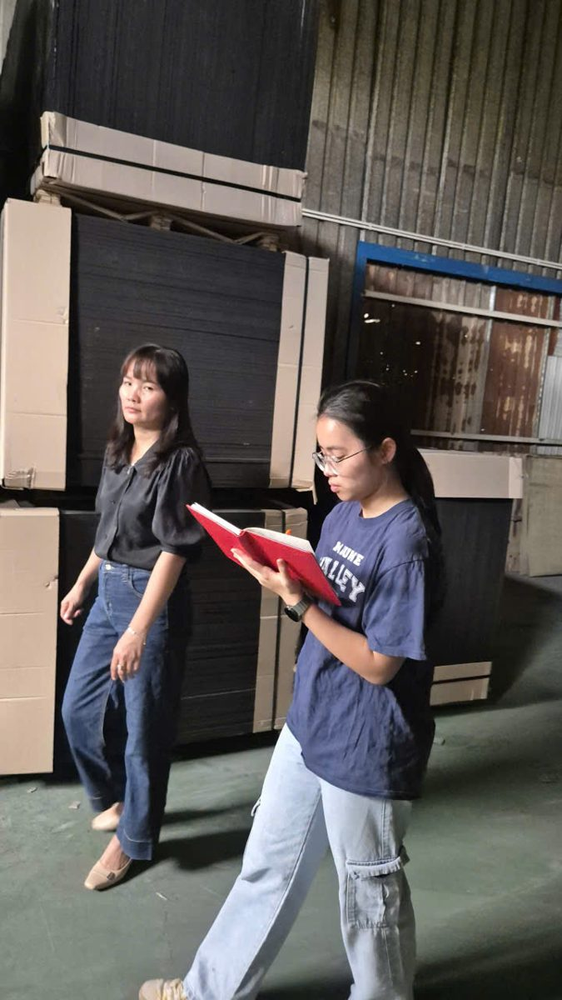
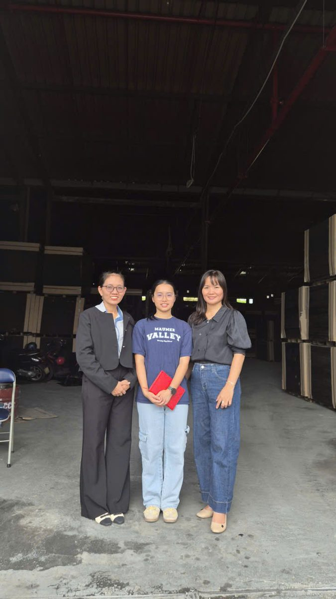
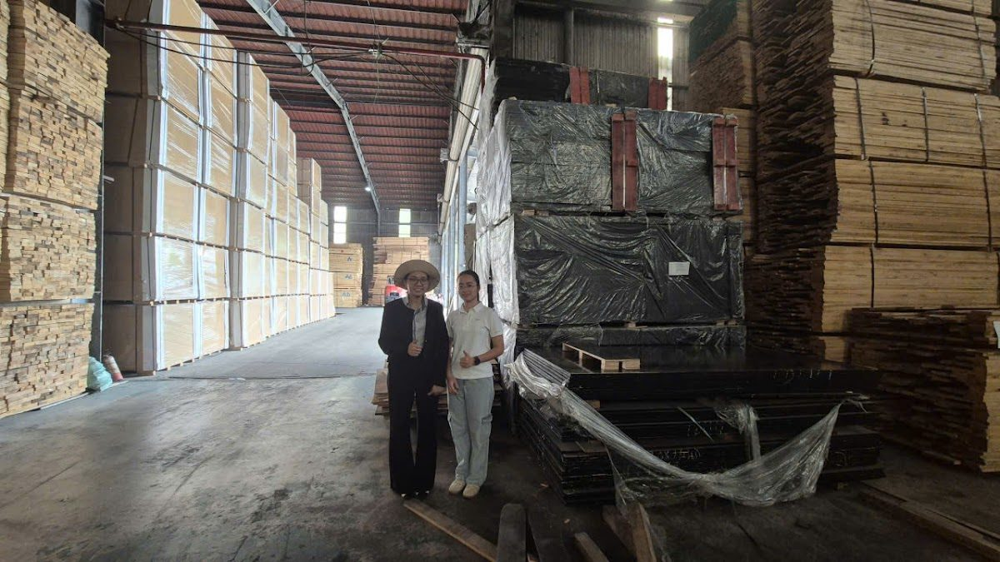
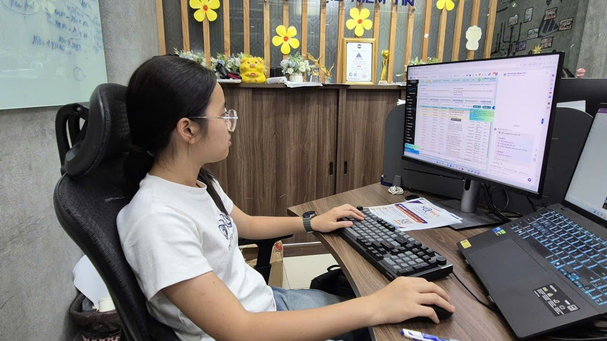
Account Intern, KATA Corporation
Doing math and scheduling in Excel aren't skills that have been tested in this job, but your understanding of your duties is more crucial. As an accountant for KATA, I learned the vastness of accounting work. Because of security, the accountant is crucial to keep silent and solve financial burdens properly. Under Mr. Hoai's supervision and Ms. Phuong as my guide, I learned about the overall microeconomic and macroeconomic view rather than only learning from academic concepts. I was allowed to actually practise and apply these concepts in real work. At first, I thought that we would have to finish a lot of typing to insert information manually; however, I realized that nowadays every company uses a program to simplify work and tasks. So, only 3 accountants can cover all financial issues and payments for more than 300 workers.
TECHNOLOGY
Inventor, Lutra Hug - under the guidance of Quach Ngoc Hung, ADHD CareMate
After the research of the cost of taking care for ADHD children, I came up with another idea: designing an app to cover those aspects of caring for ADHD kids financially. To start this project, I had to get used to React and React Native, which was extremely challenging for me at first. I was walked through the process of designing UI/UX and the features that I would like to have in my app. I developed this app with Mr. Quach Ngoc Hung as my mentor. We have been discussing the right model to use for the app, and how certain languages won't work as well as JavaScript itself. Doing coding and researching gave me new insight about human's routine develope and how application had been building since their initial MVP from different languages but somehow same roots. I got to know more and apply more methods and terms of class and distinct languages, so my typing skills got better as well.
Co-Author, "Beyond Adoption Intention: How Trust in Augmented Analytics Relates to Perceived Decision Quality Among Non-Technical BI Users"
My interest in business, finance, and data analytics has driven me to explore how technology transforms decision-making. As artificial intelligence becomes increasingly integrated into business, I became curious about whether AI-generated insights genuinely help people make better decisions and how trust influences this process. This curiosity inspired me to contribute to the research project, “Beyond Adoption Intention: How Trust in Augmented Analytics Relates to Perceived Decision Quality Among Non-Technical BI Users.”
The study examined the relationships between augmented analytics, trust in AI, and perceived decision quality among non-technical business professionals in Vietnam. Using survey responses from 250 participants and Partial Least Squares Structural Equation Modeling (PLS-SEM), the research found that trust in AI-enabled business intelligence systems was positively associated with perceived decision quality.
Through this experience, I developed essential research skills, including academic literature review, research gap identification, theoretical framework development, and quantitative data interpretation. I also gained exposure to survey-based research design, hypothesis testing, and PLS-SEM analysis. Beyond technical knowledge, I learned to evaluate evidence critically, recognize methodological limitations, and distinguish statistical associations from causal relationships.
This project strengthened my interest in the intersection of business, technology, and data-driven decision-making. I realized that effective analytics involves more than generating numbers or predictions; it also requires understanding how people interpret and act on information. Moving forward, I hope to explore how AI and data analytics can support more informed, transparent, and responsible business decisions.